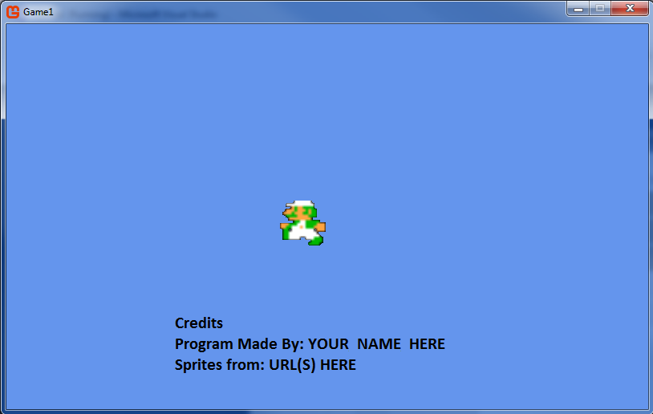
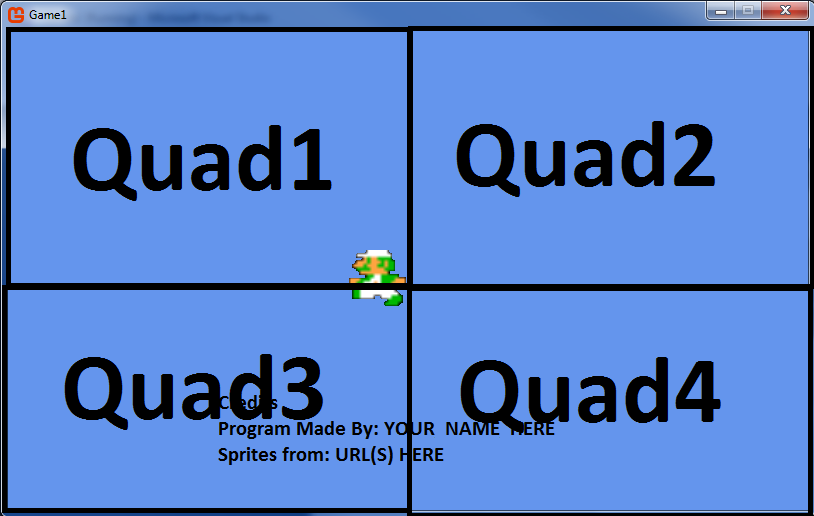

Getting Started with MonoGame
CSE 3902 Sprint #0
Objective: This is an individual assignment to get everyone comfortable using Visual Studio, .NET, C#, and MonoGame, as well as designing and implementing objects and interfaces.
Advanced students may also make use of the Command design pattern.
The core requirements of this Sprint are content loading, sprite drawing, and input handling, in an event loop.
This assignment has two due dates.
You are expected to turn in whatever you have completed by the first deadline,
but will be allowed to turn in your work again without a late penalty as long as the resubmission is turned in by the second deadline.
If you completly finish the assignment by the first deadline you will earn a 5% extra credit bonus, possibly going over 100% for the assignment.
First (early bonus) deadline: Friday 9/2 by 11:59pm
Second deadline: Saturday 9/10 by 11:59pm. Submissions on Sunday 9/11 will still be accepted, but with a 5% late penalty
Step 1) Software setup
It is recommended that you use a device running Windows for this course.
There is a native option for Macs, but we can't help with troubleshooting them as much.
Virtual machines are an option but tend to run much slower than you'd prefer,
so using a second partition for Windows is recommended if you don't have a Windows PC already.
Machines in CL112 may or may not have the most up to date versions of the software we are using.
We'll be using Visual Studio 2022 and Monogame version 3.8.1 (or later, whatever the MonoGame VS extension provides)
As of around 2018, OSU's liscening no longer includes the Enterprise version of Visual Studio for installing on personal machines,
so you can proceed right to Monogame's Getting Started page
as it now includes steps on installing Visual Studio with the necessary modules/plug-ins.
[Au'22 note - the icons for the MonoGame project templates in Visual Studio were missing, but still worked for creating a project of the type.
Note that you have to restart Visual Studio to finish installation of an the MonoGame extension]
You might be able to get a 90-day trial of the Pro/Enterprise version of VS, but this is slightly too short for the whole semester.
If you want to use the more robust version (comparing versions) this semester then you can use the
Community version for Sprint0 and wait until the start of Sprint2 to install a temporary trial.
In any case, start early as installation and setup may take several hours due to file sizes and configuration time.
Legacy link to OSU's Microsoft academic services (link) as it has other software you may find useful for other courses
Miscellaneous troubleshooting - read these before you ask for help on the install!
- The most common of unexpected problems encountered here stem from Visual Studio behaving poorly when dealing with white space in file names when building MonoGame projects,
the first reported error is usually: "...Xna namespace cannot be found..." when this occurs.
Make sure your windows username and name of the Visual Studio project you create do not contain whitespace characters to avoid this problem.
[Au'22 install note: I tried this with "faulty" username and was able to build and run a mostly blank instantiation of the temple, so this might no longer be an issue.]
In short, when you name you project don't include whitespace,
and if your windows username has whitespace in it, due to how windows handles username changes,
it is easier to make a new windows user than rename your existing profile
(the rename option in settings doesn't automatically remove the whitespace in the file system directories only what the UI displays)
- To use the MGCB Editor tool for building of content projects, you may need to install some recent C++ redistributables.
If your development machine is one you also use for gaming you may already have some of these installed without realizing it.
Based on setup in previous semesters, we recommend downloading and running the 2012, 2013, and 2019 packages. The most common error message that should cue you that you need to do these steps is
"Unable to build content - Cannot load FreeImage"; more info on this error can be found here and here
- For students working out of Caldwell labs, the project templates may not be showing up (we had this issue with MonoGame 3.7.1 but might not with 3.8)
If that is the case, contact me and I'll create and post an instance of an empty starter project for you to use to get started.
- Also for students working out of Caldwell labs, note that Visual Studio is used, not Visual Studio Blend.
- The MonoGame community isn't incredibly large, but you might find additional install and setup help on their forums.
- For those running Windows as a virtual machine or for those with older laptops, you may need to change some settings if you get an error "no suitable graphics card found" when trying to run your executable.
Instructions on that can be found here under the heading Handling the HiDef Profile Error (HiDef Profile vs. Reach Profile).
Step 2) Working with Monogame - tutorials
For understanding the basics of working with MonoGame, there are two sets of tutorials you might find useful.
Legacy tutorials - these use terms and have screenshots from an older version of MonoGame,
but include an example of more reusable code for sprite drawing that we'll look at in class.
Step 3) Programming assignment

Your task is to implement a very simple interactive program. At run-time, the user should be able to select between display of
a motionless and non-animated sprite (ex: luigi standing still),
a motionless and animated sprite (ex: luigi running in place),
a moving and non-animated sprite (ex: dead luigi floating up and down),
and a moving and animated sprite (ex: luigi running right and left).
Note: only one of these sprites should be visible at a time. The user should also be able to quit the program with a key press. Additionally, you should use a text sprite to display your name and the source of your art assets.
One significant purpose of this assignment is to gain experience using interfaces (designing them, implementing them, and using them like objects). Carefully read and follow these requirements:
- Create some interfaces:
- Create an interface for any and all controllers, IController.
- Create an interface for any and all sprites, ISprite.
- Optionally, using the Command Design Pattern, create a ICommand interface.
- Then make some concrete classes that implement the interfaces:
- Implement a concrete class for a Keyboard controller.
- Implement a concrete class for a Mouse controller.
- Implement a concrete class for the non-moving, non-animated sprite.
- Implement a concrete class for the non-moving, animated sprite.
- Implement a concrete class for the moving, non-animated sprite.
- Implement a concrete class for the moving, animated sprite.
- Implement a concrete class for a text sprite.
- If you made an ICommand interface, implement a concrete class for each Command the user can trigger: one for each different sprite that can be set and one to quit the game.
- For keyboard input:
- Have a key (0) to quit.
- Have a key (1) that has the program display a sprite with only one frame of animation and a fixed position. This should be the initial state of the program.
- Have a key (2) that has the program display an animated sprite, but with a fixed position.
- Have a key (3) that has the program display a sprite with only one frame of animation, but moves the sprite up and down on screen.
- Have a key (4) that has the program display an animated sprite, moving to the left and right on screen.
- Note on sprite motion: Instead of the moving sprites periodically changing direction, you may opt to have the sprite move in only one direction and have its position wrap around to the opposite edge once it reaches the end of the screen.
- For mouse input:
- Left mouse click, when the mouse cursor is in the top left quarter of the window, should display a sprite with only one frame of animation and a fixed position (i.e. the same as pressing 1).
- Left mouse click, when the mouse cursor is in the top right quarter of the window, should display an animated sprite, but with a fixed position (i.e. key 2).
- Left mouse click, when the mouse cursor is in the bottom left quarter of the window, should display a sprite with only one frame of animation, but moves the sprite up and down on screen (i.e. key 3).
- Left mouse click, when the mouse cursor is in the bottom right quarter of the window, should display an animated sprite, moving to the left and right on screen (i.e. key 4).
- A visual example of these four portions, labeled as Quad#, is shown below.
- Right-mouse click should quit.
- Finally, in the main game class, use the interfaces to animate/update the current sprite. If you are not using commands you will also need logic to switch between sprites and quit in the main game class (or in the concrete controllers).

Illustration of what is meant by quad. You don't have to draw the lines or Quad# text in the actual program
Design suggestions:
- Include a Dictionary in the Keyboard controller class that maps keys (buttons) to concrete instances of ICommands (based on the input keys/buttons listed above).
- In the Update method of the controllers, for each input key/button that is pressed, create and execute its corresponding Command.
- Alternatively, for the controller code if you are not using Commands, consider splitting up input logic into multiple classes (in this case QuittingController and SpriteSettingController)
- In the Game (main) class, only use the interfaces in the Update and Draw methods.
Sprite Resources:
- You can find spritesheets for Super Mario Bros. and The Legend of Zelda off of links on the game resources page.
- You are free to use other spritesheets, but do not use a spritesheet that is already is the format of a texture atlas - the learning objective here is in figuring out how to work with any spritesheet, not just 'convenient' ones.
You may use a spritesheet formatted as a texture atlas if you edit the image to have this format yourself - include a before and after image in your submission if you do this.
Work to turn in:
- Do a Build->Clean in Visual Studio, and then without rebuilding, zip/compress the directory containing your solution.
- It is recommended that you unzip the file elsewhere, then build and run it to see if it is working correctly.
- Turn in zipped file on Carmen under the assignment page named "Sprint0".
- The dropbox is set up to accept multiple submissions, only the latest submission before the deadline will be graded.
- Start early and do not wait until the last minute to submit work!
Grading:
If you cannot complete enough functionality to reach 60% on this assignment,
you will have a difficult time being able to contribute on the team project.
You should be able to evaluate your work using the rubric provided below and reach out for help before the assignment's deadline if it looks like you will come up short.
If you are not able to complete the assignment by the date of the resubmission option it is recommended that you consider dropping the course.
Your grade on this assignment will be based on correctness, but you will also receive feedback on how you could improve upon the quality of your code.
- Correctness (does it work)
- Support of keyboard input - 20%
- Support of mouse input - 20%
- Support of the four sprites types - 10% each ; 40% total
- Support of text drawing for the application's credits - 20%
- Code quality (is the code simple, readable, maintainable, and reusable)
- Readability: Follow C# capitalization conventions, as shown here
To summarize:
- Most names will be in PascalCase where the first letter is capitalized along with the start of each word concatenated to it.
- The exceptions where camelCase (first letter lowercase then capitalize the start of concatenated words) is used for parameterNames and classMembers
- You do not need to use '_' for private members.
- Readability: Use meaningful names for interfaces, classes, and variables so that you do not need or have any comments explaining them
- Maintainability: The interfaces should be complete, but as simple as possible
- Maintainability: Using interfaces in the Game class instead of the concrete types
- Simplicity and Reusability: Following the design suggestions in the list of objects and interfaces above (if you want to come up with your own design talk to the instructor first)